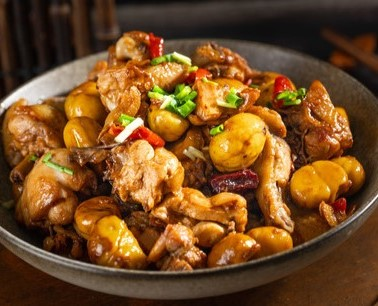

Stewed Chicken with Chestnuts
| Recipe Details: | |
|---|---|
| Level of difficulties | |
| Serving | 3 pax |
| Cooking duration | 30 minutes |
| Nutritional Facts: | |
| Calories | 294 kJ |
Ingredients
- 1 chicken
- 225g chestnuts (shelled)
- 2 sprigs spring onion (sectioned)
- 5 sliced ginger
- 1 tsp chopped garlic
- 2 tbsp wine
- 2 tbsp oil
- 1/2 tsp salt
- 1 tsp sugar
- 2 tsps light soy sauce
- 1/2 tbsp oyster sauce
- 1½ cups water
- 3/4 tsp corn flour
- 2 tbsps water
- Dash of sesame oil
Method
- Rinse and chop up chicken.
- Soak chestnuts in boiling water and peel.
- Heat oil in a wok. Stir fry chestnuts for a while. Set aside.
- Stir fry ginger, garlic and chicken. Sprinkle wine. Add chestnuts and seasoning. Bring to the boil.
- Stew over medium heat till chicken and chestnuts are tender.
- Put in spring onion and sauce. Mix well and serve hot.